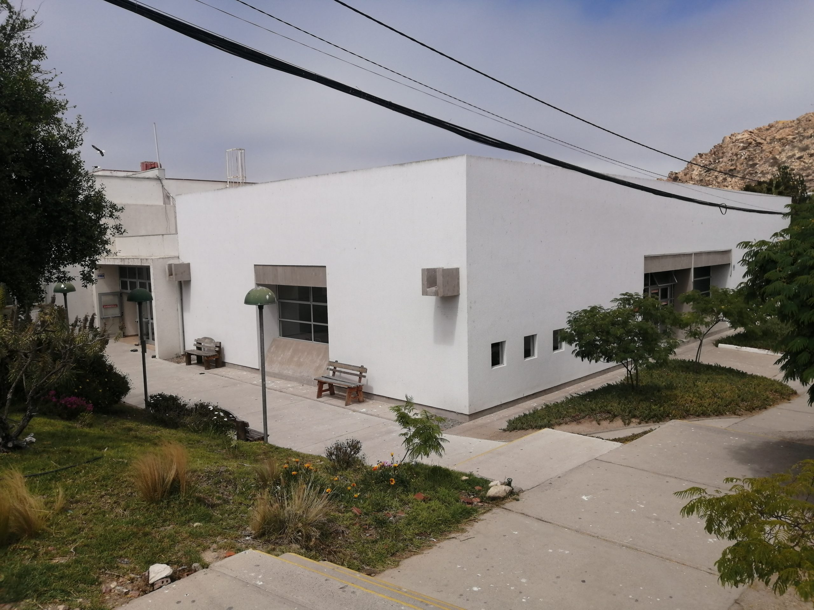
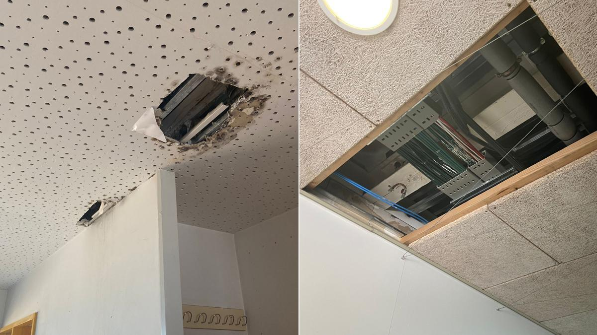
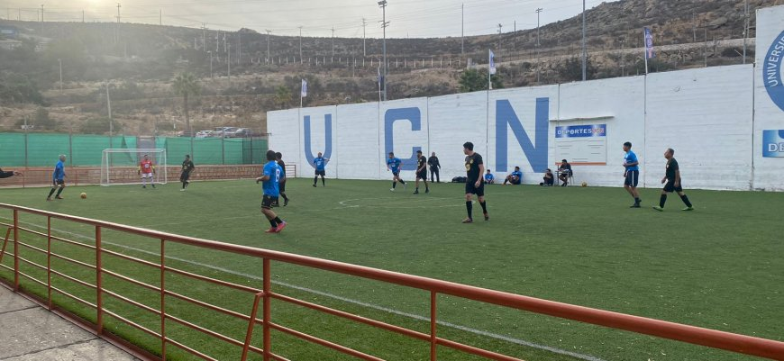
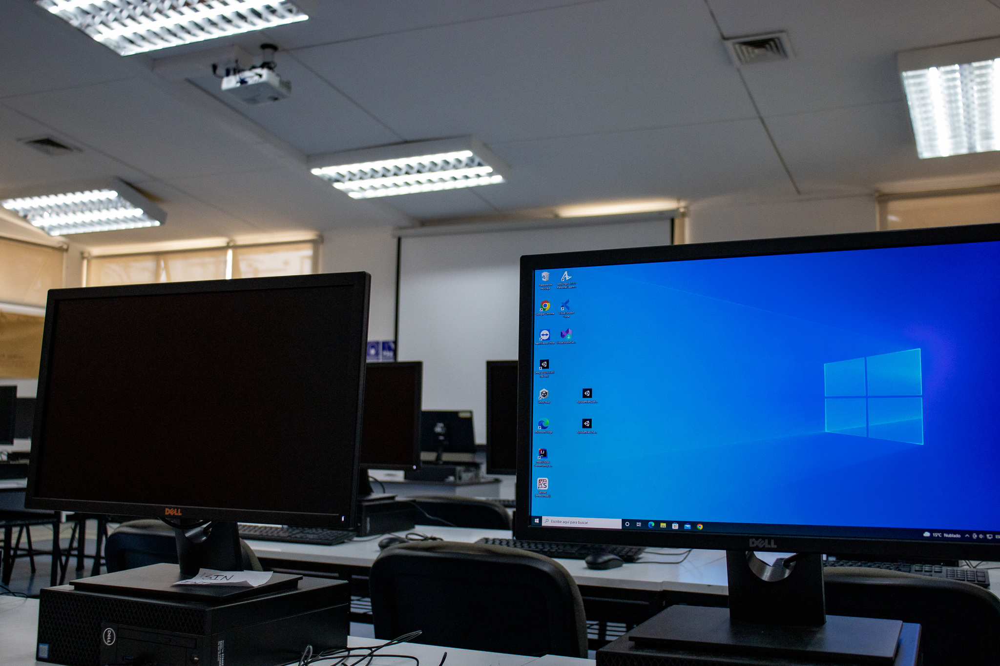

Perfil
Perfil
Últimos Reportes
Revisa los ultimos reportes realizados

Calle en mal estado
Descripción: Cerca de la biblioteca UCN
Publicado por: Cristiano Ronaldo
Fecha: 19/04/2026 - 11:31 A.M

Gotera en el techo
Descripción: Edificio X, sala-107
Publicado por: Alexis Sánchez
Fecha: 10/04/2026 - 17:12 P.M

Postes sin luz
Descripción: Cancha de futbol
Publicado por: MatiGol2006
Fecha: 12/03/2026 - 19:01 P.M

Pc con mal funcionamiento
Descripción: sala-204, el pc no prende
Publicado por: Esteban paredes prime
Fecha: 02/03/2026 - 12:39 P.M
Visualiza dónde ocurren los reportes dentro de la universidad